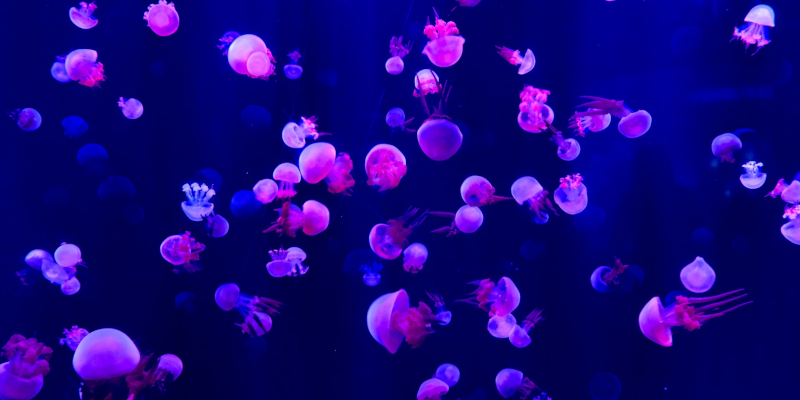

Design by Committee
2022-04-17

Building web applications is hard and requires a team of talented and educated specialists. There are many different ways to organize teams and manage the daily workload of a project.
On paper "Design by Committee" seems like a good idea. Companies these days attempt to be more inclusive in their decision making process to seem friendlier and retain talent.
In practice, pooling the collective ignorance of non-designers will never create the positive UX/UI solutions the company hopes for.
Let’s break down the elements involved to illustrate why Design by Committee is a bad idea. Then I'll offer a solution.
Company Power Structures
The purpose of a power structure is to explicitly define the people in the organization who hold authority to make decisions and hand out orders.
Most companies can have either an authoritarian hierarchy or a democratic committee. Keep in mind the two are mutually exclusive. Trying to mix them within the same organization causes confusion, conflict, and loss.
Authoritarian Hierarchies
Authoritarian hierarchies create levels of power where standard employees report to managers, who report to directors, who report to the CEO.
Orders flow down the chain of command from the top brass to managers as project and financial goals. Within this power structure it's clear who is making decisions and who is taking orders. Those with the authority to make decisions are also accountable if things go wrong.
Subordinate employees lack the authority to make decisions. But they are not responsible for management’s bad decisions. Since their job is to simply follow directions.
Democratic Committees
Democratic committees seem friendlier on the surface. Because managers and employees get a seemingly equal voice in the decision making process. This team authority comes with diluted responsibility. Everyone gets a vote but no individual is held accountable when projects fail.
The problem with this approach is the endless time wasting meetings to discuss and vote on every little decision. The slightest question or objection requires another ten rounds of meetings.
The individual members are not designers, lack the specific skills to make good design decisions, and speak in vague general terms as a means to avoid accountability from their suggestions. Simultaneously feeling incentivized by a possible bonus to appear like they are contributing to the project.
Some non-designer members of the committee grow frustrated with the lack of clear directions and guidelines. So they assume more authority than they have and start handing out orders. Which causes interpersonal conflicts and further slows productivity.
Other members, out of confusion from lacking clear guidelines, will do the bare minimum to get through the day.
Decision Making Process
All the members of a Democratic Committee use different personal decision making processes. Some come from emotion and bias. Others operate from math and logic. Misunderstandings, conflicts, and bottlenecks ensue. Slowing productivity.
Meetings tend to devolve into pointless time wasting arguments over petty things like: terminology, ticket specificity, scope, technical possibilities, interpersonal conflicts, and of course who’s making the decisions. Everything but the topic of "How to make the web application work".
Since everyone on the committee has the same level of authority, topics are voted on and/or argued over. People will act like they agree during the Monday morning meeting. Then turn around on Wednesday afternoon and decide to do their own thing because they think they know best.
This whole process of decision by committee turns into a kind of corporate poker game that wastes time, causes conflicts, and wreaks productivity.
Solutions
Design, like beauty, is in the eye of the beholder.
The best designs are made by a single individual with a clear vision. A person with the talent and education to create a positive consistent experience for the end users.
This could be a designer or executive. Someone with the ability to communicate their ideas to the team and connect the product to the company's core values.
While I personally do not like authoritarian hierarchies. My experience has been that no "good design" has come from a democratic committee.